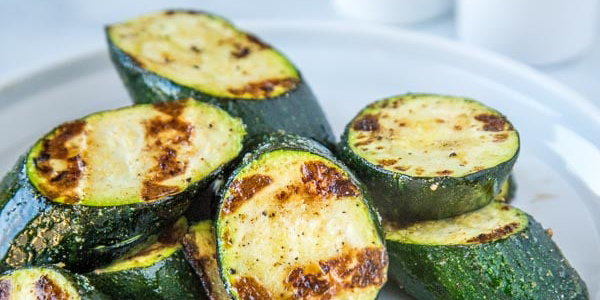

How to Grill Zucchini
You'll find a detailed ingredient list and step-by-step instructions in the recipe below, but let's go over the basics:
Grilled Zucchini Ingredients
These are the simple ingredients you’ll need to make this grilled zucchini recipe:
- Zucchini: You’ll need two fresh zucchinis, quartered lengthwise.
- Oil: Olive oil locks in moisture and gives the seasonings something to adhere to.
- Seasonings: The grilled zucchini is seasoned with Italian seasoning, garlic powder, and a pinch of salt.
- Balsamic vinegar: Of course, you’ll need balsamic vinegar for this flavorful grilled zucchini recipe.
How to Make Grilled Zucchini
Here’s a brief overview of what you can expect when you make zucchini on the grill:
- Brush the quartered zucchini with olive oil and season.
- Cook the zucchini on the grill until it’s beginning to brown.
- Brush with balsamic vinegar and cook for one more minute.